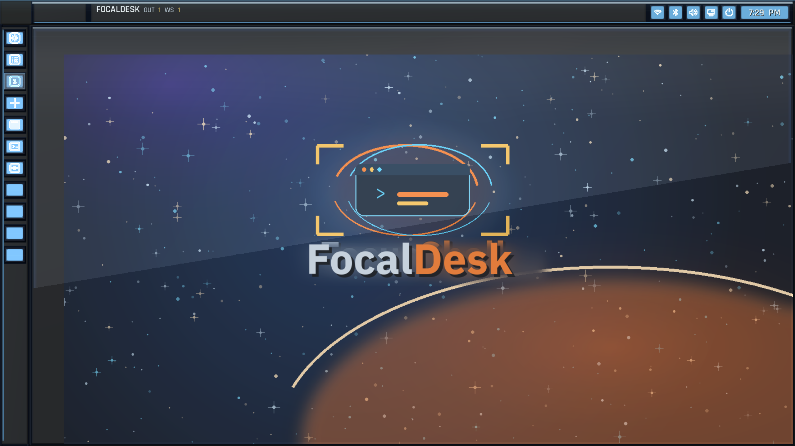
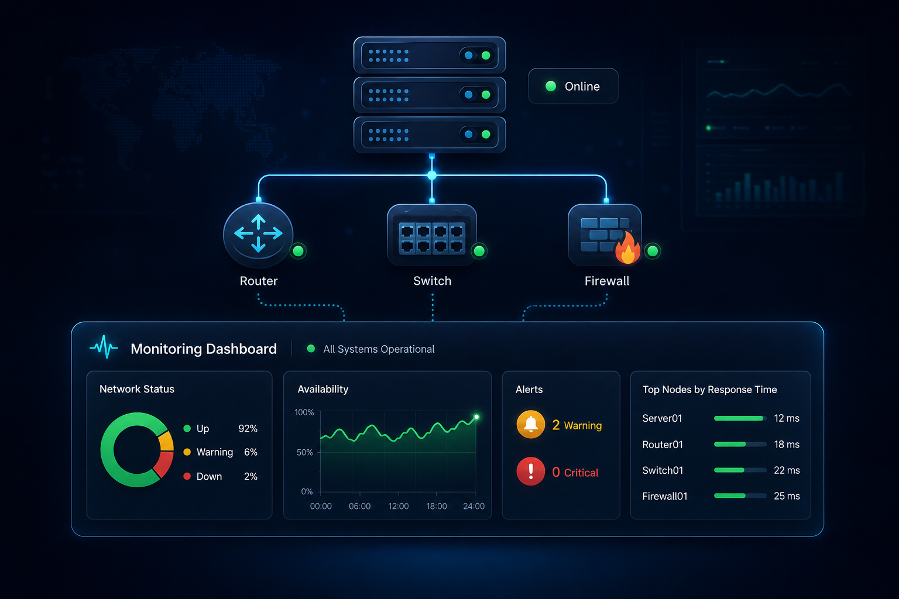

FD
FocalDesk
Wayland desktop environment

Rust Wayland desktop environment with compositor, launcher, settings, capture, and AI integration.
Windows • Linux • Infrastructure • AI • Software
I combine 25+ years of enterprise IT experience with infrastructure, desktop, and software development in Rust, C#, Go, Python, Windows, Linux, and AI-assisted systems.
Selected work
Wayland desktop environment

Rust Wayland desktop environment with compositor, launcher, settings, capture, and AI integration.
AI desktop assistant
Windows AI assistant concept with plugins, system actions, voice, and local/cloud LLM support.
Operations tooling

Monitoring, VMware migration, OpenNMS dashboards, document automation, and internal business tools.
Open for work
I take on projects where operations, automation, and product thinking need to work together.